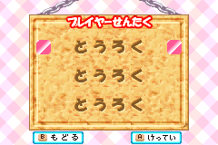

Oshaberi Inko Club (Japan) (Beta)
Flash 512K gbakit Built-In VRAM Tile Sheet 💾 MultiBoot
Cartridge Identity
- Game Code
AICJ(FamilyAIC)- Header Title
O_INKOCLUB- Maker / Revision
G0/ rev0- ROM Size
- 8.0 MiB (8,388,608 B)
- Save Media
Flash 512K- SHA-256
284e982f5b7aa3ddcbe8a75004b501d547479f8de28193a5abd8eb4af8961ae7- Engine / SDK Group
comm-038(5 families)
Screenshots


Link Cable & Multiplayer Communications
This title contains detected communication capabilities: 💾 MultiBoot.
Detailed protocol specifications, SIO registers, Joybus commands, and MultiBoot sequences are documented in the Link & Multiplayer Reference.
- Single-Cart MultiBoot
- Single-Cartridge MultiBoot (Download Play) client/server handler · Thumb SWI 0x25 (
0xDF25):0x08df42,0x1ccfce,0x27f1c0,0x378588
Battery Save Support in gbakit
Built-in definition (AICJ)
gbakit save verify AICJ save.sav
gbakit save decode AICJ save.sav
gbakit save fix AICJ damaged.sav -o repaired.savROM Assets, Compression & Audio
- BIOS Compression
- LZ77 (
0x10): 0 streams · RLE (0x30): 0 streams - ROM Pointer Tables
- 9 tables (0 pointing to validated compressed streams)
- SDK Backup Tags
FLASH_V126- VRAM / Palette Snapshot
- 263 non-zero 8×8 tiles · 3 palettes · Direct ROM matches: 33 VRAM blocks, 1 palette blocks

Text, Fonts & Scene Data
- Primary Text Encoding
- Shift-JIS (uncompressed) (
4ASCII strings ·200Shift-JIS runs) - Font & VWF Indicators
- VWF Width Table 1bpp Font · BIOS SWIs: BitUnPack
0x10:3· LZ770x11/12:17· Huffman0x13:8· RLE0x14/15:9 - Scene & Packaging
10ROM pointer tables (≥32 entries,3≥200) ·31relativeu32TOCs ·96OAM metasprite hits
Hardware MMIO Subsystems
save_bus_sram_flash0x80411fc,0x804155c
Regional Variants & Revisions (Family AIC)
- Oshaberi Inko Club (Japan) (
AICJ, 8 MiB)